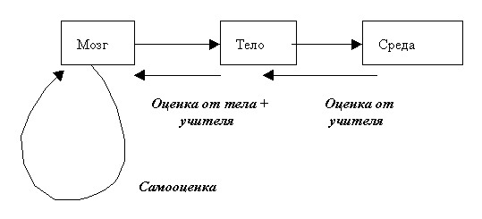
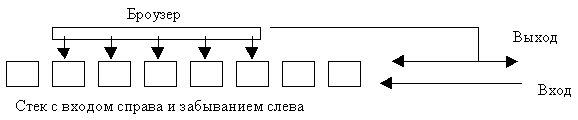
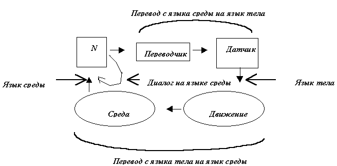
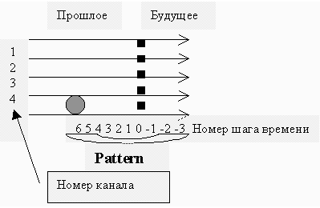
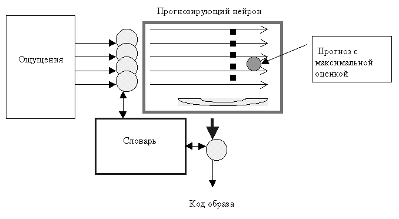

Правильный семантический разбор аналогичен пониманию сущности источника данных. То есть должна быть выработана гипотеза об устройстве источника, сделано предположение, расчёт данных от имени источника. И если этот расчёт совпадёт с реальными данными, то гипотеза оправдается, и соответствующий метод будет годиться для семантического разбора.
Рабочий дневник 1997a
01.01.97. Ассоциативная память
Ассоциативная память - это массив ограниченного размера из строк памяти. Строка памяти содержит адрес A, данные D и надежность R. (Можно ли обойтись без надежности и без забывчивости?) Рассмотрим только битовую (логическую) память. Она устроена несколько сложнее, чем аналоговая. Адрес и данные характеризуются количеством бит или байт, а надежность - это число от 0 до 1. При записи новая строка ADR заносится на место одной из наименее надежных строк. Ассоциативная память характеризуется тем, что чтение из неё возможно, даже если в ней нет строки с нужным адресом A. Результат чтения из памяти есть вероятностная сумма всех данных, рассчитанная по их надежности R и близости адреса A к заданному адресу. Можно определять близость адреса сортировкой. Можно по количеству отличающихся бит или байт.
Каждый несовпадающий бит в адресе A k снижает вес W k (например, вдвое). В итоге веса используются для определения вероятности того, что соответствующий бит данных D совпадет с битом данных D k из строки k.
Пример (A=110000)
| A | D | R | dif.W | W | норм. |
|---|---|---|---|---|---|
| 011001 | 101 | 0.5 | 3 | 0.5/8=0.0625 | 0.12 |
| 000111 | 101 | 1 | 5 | 1/32=0.03125 | 0.1 |
| 001100 | 110 | 0.1 | 4 | 0.1/16=0.0625 | 0.12 |
| 100001 | 101 | 0.5 | 2 | 0.5/4=0.125 | 0.24 |
| 100010 | 001 | 1 | 2 | ј=0.25 | 0.48 |
Вероятности получения 1 в соответствующих разрядах D есть (0.49, 0.12, 0.94)
Наиболее вероятный результат D=001. (Эти же вероятности могут дать и другой результат). Надежность результата равна 0. Она может увеличиться только при получении подтверждения допустимости и качества полученной оценки D.
12.01.97. Два уровня обобщения
Наличие ассоциативной таблицы перекодировки (памяти) в нейроне создает два уровня обобщения. Первое обобщение возникает внутри нейрона при совпадении строк памяти. В этом случае мы повышаем надежность одной из строк и снижаем до 0 надежность второй, переводя её, таким образом, в резерв для новых данных. Поскольку одна таблица может использоваться несколькими нейронами, второе обобщение возникает при совпадении таблиц. Тогда одна из них становится общей и для неё повышается надежность, а вторая переходит в резерв для проверки других общих таблиц. Если резерв таблиц становится слишком большим, можно добавить новые (скрытые) нейроны. Это должна позволять топология сети.
Как только дело доходит до программирования, становится ясно, как долго будет думать однопроцессорная нейронная сеть. Ведь для получения выходных данных от одного нейрона нужно использовать всю его память полностью.
Для поиска двух совпадающих строк в таблице нужно выполнить двойной цикл по строкам. Для поиска совпадающих таблиц в сети нужен двойной цикл по таблицам. Поэтому алгоритм должен быть очень эффективным. Например, надо сразу отказаться от числа входов, выходов, размера таблиц и т.д. не кратных 8. Нейрон должен иметь минимум 1 байт на выходе и 2 байта на входе (если нет внутренней обратной связи). Таблица перекодировки должна иметь размер в 256 или 256х256 байт. Другие значения неудобны для быстрой обработки. Передача данных между нейронами тоже должна выполняться байтами, а не битами. То есть, все 8 входных бит одного нейрона должны принимать информацию от 8 выходных бит другого нейрона. Байты не расщепляются. Логически, это не имеет значения, а расчет ускорится. Тем не менее, выбор и сравнение данных между ассоциативными строками происходит побитно (?).
Для ускорения можно не делать полные циклы.
Поскольку ассоциативная таблица перекодировки не полна, то нейрон может "терять" входную информацию от датчиков общения с внешним миром. Чтобы сгладить потери, надо подавать (дублировать) входную информацию сразу нескольким нейронам.
Искусственная жизнь
Моделирование самообучающейся системы возможно только одновременно с моделированием внешнего мира и датчиков для общения с ним. Взаимодействие между объектами этого мира происходит только через среду. Объекты (тела) могут не иметь разума или выполнять какие-то запрограммированные действия.

Информационные каналы таковы.
Между мозгом и телом:
- Абстрактная информация
- Состояние мозга (узнавание, неясность, догадка, обобщение, надежда, страх, опасность)
- Состояние тела (сопротивление, усталость, удовольствие, повреждение, боль, вкус)
Между телом и средой:
- Физические каналы связи (свет, касание, поощрение, препятствие)
Между средой и дисплеем связь только в сторону дисплея для наблюдения.
Если все же единицей данных является не бит, а байт. Тогда логические данные можно представлять как неполный байт. Аналоговые данные можно усреднять при ассоциативном чтении. Но тогда практически невозможно работать с символами (с буквами). Так как для них усреднение - безумная операция. Правда и случайный подбор недостающего бита тоже безумен. Может быть, хрен редьки не слаще?
29.01.97. Сравнение арифметической и логической интерполяции.
Пусть имеется два байта: 110 (6) и 011 (3)
- Арифметическое среднее: (3+6)/2= 100 (4) или 101 (5)
Средний бит не сохранился, а он мог иметь независимый логический смысл! - Логическое среднее: 010 (2), 011 (3), 110 (6), 111 (7)
Это лучше, но байт мог иметь арифметический смысл, а мы с четырех попыток не попали в середину диапазона. - Абсолютное (не совпали, поэтому возможно всё): 000 001 010 011 100 101 110 111
- Ничего нового: 110 (6) или 011 (3) При этом данные могут изменяться только при забывании.
- Арифметическая интерполяция: 3 или 4 или 5 или 6 (любое
число в диапазоне, включая границы)
Так на отдельных байтах получим арифметическую интерполяцию, а на сети в целом - арифметическое среднее.
Вначале опытов пусть нейроны имеют точные таблицы без интерполяции.
Точная и ассоциативная память
Можно предварительно выбирать ячейки памяти по точному совпадению, например, первого байта (двух, трех...) так, чтобы получилось не более 10 ячеек. А по ним уже делать ассоциативную выборку. Это ускорит чтение из памяти. Получится, что память по первым байтам точная, а по остальным - ассоциативная. Какая в этом польза? Кроме скорости.
Ассоциативное чтение из двух ячеек.
Пусть две ячейки имеют содержимое a и b, и надежность (вес) Wa и Wb . Результат обозначим g .
Правила: 0 вклада не дает. Сложение с собой ничего не меняет.
Wg = (Wa 2 + Wb 2 ) / (Wa + Wb )
Статистически взвешенная сумма : g = (a Wa + b Wb ) / (Wa + Wb )
Пусть данные сами содержат в себе надежность. Например, диапазон от -1 до 1 соответствует логическому диапазону от точного False до точного True. Тогда
g = (a + b ) / (|a | + |b |)
Но здесь сложение с собой или с нулем повышает надежность.
Последовательность наследования свойств.
Cell -- > DataCell (адрес + данные) -- > AssociativeMemory -- > (Пул таблиц) -- > Neuron (независимый от других нейронов, имеет входной и выходной регистры) -- > (Пул нейронов) -- > NeuralNet (содержит список всех связей) -- > Brain (имеет регистры для абстрактных входов и выходов) -- > FreeObject (Body) (разные физические объекты) -- > Media
Таблица с выбыванием и оценкой.
Точная или ассоциативная таблица с выбыванием содержит ограниченное число строк. Каждая строка содержит адрес, данные и надежность (оценку).
- Если нужного адреса в таблице нет, то вырабатывается новая строка с оценкой 0.
- Внешняя оценка равномерно распределяется от максимума для самой новой до 0 для самой старой строки и прибавляется к текущей оценке. Оценка может иметь величину и знак! Так можно обучить таблицу тому "что делать нельзя". Новые случайные данные должны существенно отличаться от "неправильных". Со временем оценка должна убывать по модулю: R:= 0.99R . Или самые старые данные должны замещаться независимо от их ценности.
- Обобщение строк: строки могут быть общими у разных таблиц.
- Обобщение таблиц: таблицы могут быть общими для разных нейронов.
Когда нейрон получает положительную оценку, то
- он передает её самой новой строке
- он несколько повышает оценку всех строк проигранных за последнее время.
Это может быть единая операция. Количественная оценка может получиться при выдаче оценки несколько раз. Для повышения оценки последних строк, они не должны забываться вовсе. Пусть все они записываются в таблицу с оценкой 0 и вытесняют друг друга. Чтобы отличить строки с высокой оценкой и "проигранные недавно" надо ввести два времени, как свойства строки:
- Expire Time - время истечения ресурса
- Last Time - время последнего использования.
Время может течь независимо в каждой таблице. Это может быть просто счетчик обращений к таблице, который можно иногда сбрасывать, вычитая константу, чтобы не было переполнения.
06.02.97. Скорость научения:
Чем меньше время от исходного состояния до обученного при одних и тех же действиях учителя, тем лучше. Если все нейроны (или все строки таблицы) одновременно получают одинаковый стимул, то просто скорость адаптации мозга замедляется, и все.
Вопросы .
- Сложность навыков?
- Способность к прогнозу?
Как использовать для обучения текст?
Учитель говорит первое предложение из текста. Ученик должен угадать следующее предложение. За успех ставится хорошая оценка. Например, если угадано правильно хотя бы одно слово. А вначале, если имеется хоть одно осмысленное слово. Если оценка количественная, то она может нарастать по мере усложнения ответов. И т.д. (Учитель говорит второе предложение ...) Если автор текста не слишком большой оригинал, то ученик сможет предсказывать его мысль. Если и не точно, то в авторском стиле. Так хорошо учить сочинению стихов.
Способы проверки качества обучения:
- Проверка беседой. Экзаменатор говорит предложение, например, вопрос. Ученик отвечает, как умеет. Экзаменатор беседует с учеником и оценивает разумность.
- Тест повторным чтением текста.
- Тест на качество знаний. Выбрать один из правильных ответов.
Сходимость обучающего алгоритма . Не всякий алгоритм обучения способен достичь заданной цели. Мама хочет, чтобы ребенок перестал плакать, и бьет его по попе.
Как промолчать? Учитель задает вопрос. Ученик может подумать и ответить не сразу. Но абстрактный мозг всегда что-то выводит. Значит ещё должно быть желание отвечать. Можно это сделать так. Какая-то информация от мозга открывает речевой канал связи. Это функция тела. Можно оценивать качество найденного ответа и при плохом качестве промолчать, "пропустить ход".
Алгоритм добавления нейрона .
- Разрываем 1 связь.
- Включаем в неё 1 нейрон так, что используется 1 его вход и 1 выход.
- И т.д. для всех пар вход-выход этого нейрона.
- Лишние входы подключаем в случайные места.
Сеть из 0 нейронов. Пусть среда содержит одинаковое число входов и выходов. Они соединены мостами. При росте сети включаем новые нейроны в мосты.
Нейрон - внешний мир. Все входы и выходы среды соединяем мостами. См. " Сеть из 0 нейронов ".
Распределенная среда. Создаем сеть без входов и выходов. Среда захватывает себе нужное количество нейронов и отвечает за них. Вариант: среда захватывает нужное число мостов. Это проще. (Мост - это нейрон с 1 входом и 1 выходом).
Вопрос. Каковы объективные причины для добавления нейрона?
12 февраля 1997. Простая структура сети.
Если нейроны расположить в узлах квадратной сетки так, чтобы информация проходила снизу вверх и слева направо, то нижнюю и левую сторону квадрата можно использовать для ввода данных, а верхнюю и правую - для вывода. Тут не помешал бы рисунок. Если верхнюю и нижнюю стороны соединить, то получится труба, у которой входы слева, а выходы справа. Левую и правую стороны тоже можно замкнуть. Тогда связи с внешним миром не будет. Так можно замкнуть или частично замкнуть любой многомерный куб из нейронов с одинаковым количеством входов и выходов.
17 февраля 1997. Скорость самообучения при случайных блужданиях.
Пусть память содержит N ячеек, то есть она способна запомнить реакцию на N входных сигналов. Пусть внешняя среда может обеспечить N разных входных сигналов. Пусть каждому сигналу соответствует 1 правильная реакция. Пусть входные сигналы меняются случайно. Пусть реакция является случайной, если ответ не известен. Пусть реакция запоминается, если поступила оценка. Тогда вероятность того, что на случайный входной сигнал будет случайно дан правильный ответ, равна 1/N. Средняя степень обучения будет достигнута за N 2 шагов.
Пример . Пусть правильным ответом является одна и та же реакция на любой входной сигнал. Тогда случайно блуждающая система обучится примерно за N шагов.
Пример . Пусть правильным ответом является повторение входного сигнала. Тогда среднее время обучения N 2 шагов.
Если вход имеет ширину 64 бита, то N = 2 64 = 10 20 ; N 2 = 10 40 .
Арифметическая интерполяция.
Если входной сигнал линейный, то для правильного обобщения достаточно иметь всего 2 ячейки памяти. Если сигнал более сложный, но имеет вид полиномиальной функции, то линейная интерполяция всё равно позволяет экономить память. Можно применять и квадратичную интерполяцию. Именно такие нейронные системы разрабатываются в мире. Но они не способны обрабатывать логическую информацию (только аналоговую). Как можно описать понятие размера в логической, качественной шкале:
- Суб микро, квантовый, атомный, молекулярный, микронный, маленький (сантиметр), большой (метр), огромный (100 метров), гигантский (километр), громадный, астрономический, галактический, вселенский масштаб.
- Незаметно маленький, маленький, обычный, большой, бесконечный.
- Сравнительная шкала: меньше, такой же, больше, непонятно.
3 марта 1997. Потоковая логическая ассоциативная память "Диалог".

Память имеет вид длинного стека. Данные поступают на вход в виде логических единиц (букв, слов, фраз). Назовём их словами. В конце стека данные забываются. В первую очередь забываются данные с низкой оценкой. При этом последовательность слов уплотняется. Входной информацией являются последовательности слов (фразы), поступающие от среды (от предыдущего нейрона в сети, от учителя, от обучающего автомата). Выходной информацией являются фразы, найденные внутренними механизмами памяти, как логические продолжения входных фраз.
Пример : Вход (Сколько будет дважды два?), Выход (Четыре.)
Логическим продолжением является такая фраза, которая следовала когда-либо ранее за фразой похожей на данную входную фразу.
Степень похожести:
- Точное совпадение
- Те же слова в несколько другом порядке
- Слова в том же порядке, но не все
- Не все слова
- Нет совпадения
Если фраза довольно точно угадана, то она получает положительную самооценку. Оценка распространяется вглубь стека с убыванием. Так же распределяется внешняя оценка. Найденная фраза поступает на выход и одновременно на вход, если к этому моменту не поступил внешний входной сигнал (фраза). Таким образом, вход и выход не зависят от процесса поиска данных. Поиск идёт постоянно. Если внешнего сигнала нет, то возникает монолог. Все входные фразы считаются объективными и заранее получают положительную оценку. Всё найденное (броузером) имеет оценку 0.
Вопросы : Обобщение, Зацикливание, Упаковка. (Но не прогноз; прогноз здесь, наконец, выполняется.)
Оценка 0 для своих реплик помогает против зацикливания. Фразы с оценкой 0 и ниже находить нельзя. Если при поиске фразы находятся похожие варианты, то для проверки того, что они могут быть выбраны, складываются их оценки. Если результат оказывается <0, то это означает, что такая фраза уже была оценена как плохая (неверная) и её выбирать нельзя.
Если для выбранной фразы предыдущий и текущий контексты сильно отличаются, то самооценка такой фразы может быть даже отрицательной. Если найдено несколько похожих диалогов, то выбирается тот, который продолжался дольше всего с положительной оценкой.
В процессе обучения в диалог может быть помещено длинное стихотворение или другой длинный текст с положительной оценкой. Может получиться, что весь этот текст будет выдан как ассоциация на некое слово, расположенное перед текстом. Чтобы такого не получилось, надо разделять диалог на фразы. Логической единицей данных является буква (слово ...), а логической единицей реплики является фраза, состоящая из слов.
Если идущие подряд фразы имеют положительную оценку, то они не должны выдаваться сразу все подряд. Надо просто ввести время ожидания реакции. Это время должно само определяться по среднему темпу запросов от среды. Пусть, например, это время будет вдвое больше, чем средний интервал между запросами от среды. Тогда и стишок можно рассказать и можно дать собеседнику подумать.
На самом деле решение отвечать или молчать есть результат адаптации, то есть выбора правильного поведения.
Первая степень упаковки данных это хранение их в виде списка фраз. Пока нет обобщений, ответы возможны только в виде готовых фраз. Это не ограничивает общность. Если входной поток информации представляет собой не фразы, а слова (буквы), то и ответ будет в виде слов. Например, входным потоком может быть координата цветка, к которому надо лететь бабочке.
Первая степень обобщения это поиск ответа не по точному контексту (предшествующей последовательности фраз), а по близкому контексту. Сначала ищем точный контекст. Если такого нет, то ищем близкий контекст. Но ответ должен быть в виде точной фразы, как она получена от учителя. В зависимости от точности совпадения предшествующего контекста ответ должен получать отрицательные самооценки. При точном совпадении - 0. Оценка учителя относится не ко всему предыдущему контексту, а только к последней фразе. Чтобы различить соседние фразы, надо присваивать им строго разные оценки. Хотя бы на 1.
11 марта 1997. Разговор на двух языках.
Если нейрон (нейронная сеть) должен получать данные одной природы и выдавать данные другой природы, то требуется разговор на двух языках или присутствие переводчика.

Логично считать, что язык среды (координаты) богаче, чем язык тела (движения). Поэтому Переводчик просто автоматически составляет словарь. Поступающие фразы равномерно заполняют диапазон возможных входных значений (входной словарь) датчика. (Кажется, это конструктивно неверно.) Учитель, находящийся в среде, ставит отметки, и тем самым утверждает словарь Переводчика. В том числе, видно, что такая схема позволяет обучить нейрон реагировать движением на слова, или словами на движение. В последнем случае датчик должен вырабатывать слова. Если фразы среды могут попасть на вход датчика движения, а это обычное дело при равноправном диалоге, то произвольное назначение словаря не верно.
Если диалог завершился удачно (с хорошей отметкой), а затем система вновь попала на какой-то участок этого диалога, то он тоже завершится удачно. Например, так будет, если бабочка гоняется за цветком, который летает по кругу. Если же цветок движется случайно, то от нейрона требуется умение обобщать.
Видимо, разумное обобщение возможно только для заданных типов данных.
Например, для чисел, ясно какие числа близки. Для фраз, состоящих из букв, можно сдвинуть буквы на 1, 2 единички влево и вправо. Если хотя бы в одном случае половина букв совпадёт, то считаем, что фразы близки по смыслу. Это далеко не общий алгоритм. (Поискать литературу на эту тему.)
Возможно, в общем случае, язык, на котором ведет диалог нейрон, должен состоять из фраз, структура которых не совсем абстрактна, а зависит от решаемой задачи. Фраза может иметь жёсткую семантику, например, 3 числа + фраза из букв. Если диалог строгий, то есть без поиска обобщений и выработки своих фраз, то всё равно, как устроены числа и буквы (ищется точное совпадение). Если возможны обобщения (поиск близких по смыслу фраз), то нужно применять соответствующие правила сравнения к числам и к буквам.
Каждый нейрон и вся сеть должны быть именно абстрактными. Конкретность возникает только при взаимодействии с внешним миром в устройстве входных и выходных преобразователей.
Вопросы .
- Какие куски диалога можно исключить? Никакие.
- Можно ли сжать диалог путём зацикливания? (?) Можно сжать как в обычных алгоритмах за счёт повторов.
- Что должен слышать переводчик? Весь диалог или только ответы нейрона?
- Можно ли разделить входные каналы по физике или по смыслу? Да.
- Если да, то можно ли разделить фразу? Нет.
- Как построить более эффективную сеть из диалоговых нейронов?
- Как узнать, что какой-то участок сети требует ещё нейронов. Или, что там есть лишние нейроны.
16 марта 1997. Общий диалоговый нейрон.
Нейрон содержит память для фраз в виде стека. Одна фраза состоит из вопросов (входные фразы) и ответов (выходные фразы). Все эти фразы могут иметь разные языки. Конечно, фразы являются просто числами. Их значение содержится в соответствующем словаре. Словарь может быть дан заранее или может составляться по мере накопления фраз. Это зависит от природы датчиков. Если нейрон взаимодействует с другими нейронами, то, возможно, словарь не нужен.
Пример . На вход поступают расстояние до цветка и расстояние до паутины. В качественном смысле это коды: контакт, близко, далеко, нет в поле зрения. На выходе нейрон образует коды для управления углом поворота и скоростью движения бабочки. Итого 1 фраза диалога состоит из 2 входных и 2 выходных фраз, все на разных языках.
При поиске нужного логического ответа нейрон сравнивает текущее окончание диалога с фрагментами диалога, сохранёнными ранее. Ответ выбирается по наиболее близкой структуре диалога с весом 1 для последней фразы и с убыванием для следующих фраз. Это похоже на распознавание образа. При равных условиях выбирается тот диалог, который будет продолжаться дольше с положительной или нулевой оценкой. (Это - пристрастный прогноз). Отрицательная оценка означает разрыв диалога. Кроме найденного ответа нейрон предсказывает следующий ход (очередные вопросы) и ставит себе самооценку за качество предсказания. Если через несколько ходов нейрон предвидит повышение оценки, то возникает положительная эмоция. Если он предвидит ухудшение оценки, то возникает отрицательная эмоция. Эмоции могут порождать оценку для ближайших нейронов сети. Если нейрон предвидит неизбежную плохую оценку, то он пытается идти другим путём. То есть вариант, неизбежно заканчивающийся плохой оценкой, не выбирается. Имеется в виду плохая оценка, завершающая последовательно ухудшающиеся оценки. Если же до неё будет повышение оценки, то такой диалог можно выбрать. Это есть "синтез поведения".
Самообучение всегда слишком долгое. Поэтому для быстрого накопления словаря и правильных диалогов надо применять обучение за ручку. Если нейрон всего один, то это очень эффективно.
Если словарь заменить или поменять в нём порядок фраз, то нейрон забудет, то чему он был обучен. Нужно будет переучиваться. Очень сомнительно, что внутренний диалог нейрона может пригодиться ещё кому-то. Так что обобщение путём использования общей таблицы перекодировки - утопия. Другое дело, сравнение диалогов с весами. Так возможна некая интерполяция.
Однако ясно, что этот метод не очень хорош для распознавания рисунков или звуков, в которых может измениться масштаб или интенсивность всего поля. При небольшом изменении каждой фразы обобщение не будет найдено.
Написать список ключевых тестов, по которым можно проверять нейронную систему.
Можно попробовать строить граф понятий: что с чем связано. Если эта структура логична, то можно выявлять в ней пробелы и пытаться восполнить их, задавая вопросы. По ней же ищется осмысленный ответ. Важно, чтобы этот граф не был приспособлен заранее для определённого вида данных (слова, рисунки, звуки).
Итак. Если нейрон помнит все на свете диалоги, то этого не достаточно для обобщения. Для обобщения, возможно, требуется понимание или поиск понимания.
Понимание: сознательный акт разделения объекта на логические части, из свойств которых следуют свойства объекта.
Как обобщает традиционная нейронная сеть.
Традиционные сети предназначены исключительно для (быстрого) распознавания образов. Классическая универсальная сеть "backpropagation" состоит из матрицы (слоя) входных нейронов (ячеек), затем идёт (скрытый) слой нейронов и выходной слой. Образ в виде всего массива точек поступает на входную матрицу. Каждый входной нейрон передаёт сигнал всем нейронам следующего слоя. Каждый нейрон промежуточного слоя передаёт сигнал каждому нейрону следующего слоя и каждому нейрону своего слоя кроме себя. На выходе последнего слоя возникает так называемый результирующий образ. Обучение сети заключается в подборе весов для передачи каждого сигнала. Нейроны же просто суммируют сигналы с насыщением. Обобщение в виде способности распознавания образа при его повороте и изменении масштаба возникает благодаря симметрии подключения очередного слоя нейронов. При матрице 100х100 количество запоминаемых коэффициентов порядка 100 000 000. Это эквивалентно запоминанию 10 000 образов и последующей интерполяции при распознавании, но работает гораздо быстрее, так как интерполяция была выполнена при обучении.
Я не вижу здесь потенциала для возникновения искусственного разума. Мой диалоговый нейрон способен не только распознать образ (особенно если он помнит 10 000 образцов), но и дорисовать его. Кроме того, в системе распознавания образов нет диалога вовсе, и последовательность событий не имеет значения.
Одна из возможных технологий обобщения может состоять в попытке подмены контекстов при поиске подходящего диалога. Для этого надо проводить "семантический" разбор истинных фраз для каждого входного и выходного языка. Разбор заключается в составлении словаря всех типичных последовательностей входных байт. Этот словарь может быть общим со словарём фраз. Фраза - это частный случай последовательности байт.
Сколько будет дважды два? колько будет дважды два? олько будет дважды два? олько будет дважды два? лько будет дважды два? ько будет дважды два? ко будет дважды два? о будет дважды два? будет дважды два? удет дважды два? дет дважды два? ет дважды два? т дважды два? дважды два? важды два? ажды два? жды два? ды два? ы два? два? ва? а??
Вот в таком духе. Для экономии памяти можно хранить это в виде ссылок на более короткие контексты.
Может быть надо как-то выявлять "типы" и "сочетаемость" контекстов. Но такого рода данные добавляют количество сущностей и поэтому методически не желательны, но для ускорения работы и повышения разумности нейрона могут быть полезны. При хранении всего диалога сочетаемость форм (контекстов) может каждый раз проверяться на примерах.
Алгоритм.
- Поступают новые входные фразы на внешних языках
- Добавляем их в словари (если нужно)
- Выполняем семантический разбор для каждого языка и пополняем словари
Поиск ответа (с подменой 1 формы, можно также подменять хоть все формы)
Уровень 1. Входную фразу считаем формой. Ищем диалог с такой же формой и "положительным" ответом. Если находим - выдаём ответ.
Уровень 2. Находим все представления входной фразы, как будто она состоит из двух форм. Ищем все диалоги, в которых хотя бы одна из форм расположена на своём месте, ответ положительный и одинаковый для данной формы (и любой второй формы) или положительный и содержащий вторую форму.
Уровень 3. То же самое. Находим все представления входной фразы, как будто она состоит из трёх форм. Ищем все диалоги, в которых хотя бы две формы расположены на своём месте, ответ положительный и одинаковый или положительный и содержащий третью форму.
Уровень N. Совершенно аналогично 3, так как "левая" и "правая" формы существуют.
После того как ответ найден, если ещё есть время, ищем, что бы сказала среда. Если её ответ однозначен, то ищем свой ответ и т.д. Как только время истекло (1 сек) выдаём свой последний ответ (на своём языке). Так можно пропускать "очевидные" умозаключения.
Такой диалог годится также для распознавания образов и для управления движением. При распознавании образов учитель может не отвечать на дополнительные вопросы нейрона. При управлении движением нейрон не будет успевать прогнозировать. Это, кроме того, очень далеко от абстрактного разума.
Прогноз продолжения диалога поможет выявить "чувства".
- страх - предвидение худшего
- надежда - попытка улучшить прежнюю оценку
- уверенность - предвидение хорошей оценки
- сомнение - найден ответ, который ранее имел низкую оценку
- ожидание - требуется реакция среды
Как формализовать любопытство, стремление к логичности и завершённости?
- Пусть нейрон пытается найти или улучшить ответы на вопросы, на которые ответы ранее имели плохие отметки.
- Пусть нейрон формулирует вопросы за среду и пытается на них ответить. (Кто это оценит?)
Как может нейрон задавать вопросы от имени среды на своём языке? Не может. Для опытов мы используем общий со средой словарь, но это не даёт права говорить за среду. Нейрон может только попытаться изменить тему, спровоцировать среду задать нужный вопрос. Нейрон может говорить "за среду" только на своём языке, который возникает после входных датчиков. То есть он говорит на языке образов.
Алгоритм.
Пусть текущий разговор приостановлен так как
- нейрон ждёт ответ или
- нейрон ждёт вопрос
В это время нейрон ищет такие вопросы, на которые он ранее ответил плохо.
- Пытается ответить лучше.
- Если ему кажется, что это удалось - пытается сменить тему. (Возникает разрыв диалога).
Ищем фразу, которая была сказана до требуемого момента и не получила отрицательной оценки, если, конечно, не было разрыва диалога.
Как нейрон сможет рассказать длинную историю? Если он получил положительную оценку, то может чаще говорить. Кроме того, считаем, что молчание учителя - знак согласия. Если долго нет оценки, то нейрон сам повышает свою самооценку (?). А как со стимулированием интереса среды? :)
28 марта 1997. Вряд ли нейрон может владеть двумя языками.
Семантический разбор возможен только для одного языка. Поэтому невозможно ответить на другом языке с использованием семантического разбора.
Прогнозирующий нейрон
Стало ясно, что описанный в последние дни диалоговый нейрон может работать как безответная прогнозирующая система. Можно слушать фразы от среды, проводить их семантический разбор и делать долгосрочный прогноз. Если нейрон должен отвечать, то это будут ответы на том же языке . Получатся чередующиеся реплики. За свои реплики нейрон может получать оценку. При положительной оценке фраза рассматривается далее, как верная. При отрицательной оценке - диалог разрывается. Если система должна действовать в другой предметной области, например, на слова отвечать движением, то требуется словарь-переводчик. Видимо, перевод всё же может быть произвольным: код-код.
Похоже, что такой прогнозирующий нейрон одинаково хорошо справится с распознаванием образов (картинок, звуков, текстов), управлением движением, диалогом.
09 апреля 1997. Структурный разбор требует изначальных знаний.
Похоже, что семантический или структурный разбор поступающих данных это фикция . Смысл логических данных заключён не только в них самих, но в их источнике и в их интерпретации. Данные - это свойства объективного источника. Поскольку источники могут иметь самую разную природу, то невозможно иметь семантический алгоритм на все случаи жизни. Правильный семантический разбор аналогичен пониманию сущности источника данных . То есть должна быть выработана гипотеза об устройстве источника, сделано предположение, расчёт данных от имени источника. И если этот расчёт совпадёт с реальными данными, то гипотеза оправдается, и соответствующий метод будет годиться для семантического разбора. Такая задача не всегда под силу реальному разуму, но не простому нейрону.
Так что все алгоритмы, требующие составления словаря, анализа фраз (поиск одинаковых контекстов, частых повторений, сочетающихся слов, и т.д.), синтеза фраз и т.п. могут годиться только для конкретной задачи, например, для шахматной программы, но не для общей задачи о моделировании разума.
Итак, логический нейрон не обязан понимать входной поток. По аналогии с аналоговым нейроном он только должен уметь правильно "интерполировать", то есть выдавать осмысленные данные в ответ на любой входной сигнал. Надо разработать наиболее примитивный и одновременно наиболее общий аналоговый нейрон.
Монологовый прогнозирующий нейрон
В отличие от обычного нейрона объективная логика не может быть изобретена логическим нейроном. Ему разрешается только использовать объективные (поступающие к нему) логические утверждения в качестве ответа. То есть нейрон должен пользоваться одинаковым входным и выходным словарём. Каждая объективная фраза в словаре представлена номером (кодом). Это и есть рабочий материал для нейрона . Интерпретировать и изменять фразы не допускается. Значит, словарь нейрону не нужен . Это внешняя функция. Интерпретация - тоже допустима только, как внешняя. Если основной функцией нейрона является прогноз (в этом и заключается интерполяция, это первый признак способности к адаптации), то он способен сам себе ставить оценку, за совпадение прогноза с объективным потоком данных. Поэтому внешняя оценка не нужна. Она может потребоваться на более высоком уровне. При этом заодно решается проблема отсутствия оценок, которая имеется при ожидании не только действия, но и оценки от учителя. Для общности нейрон должен делать прогноз не только следующего хода (фразы). Пусть прогноз будет длительным. Самооценка должна учитывать прогноз на много ходов. Но внешние по отношению к примитивному нейрону, структуры могут использовать из всего прогноза только некоторые фразы. И использовать их можно по-разному. Например, перевести на другой язык, подать на вход того же нейрона, подать на другой нейрон, как объективный сигнал и т.д. Итак, фраза, с которой оперирует простейший нейрон, не состоит из трёх частей (вопрос, ответ, оценка), как я предполагал раньше. Это просто бесструктурная фраза (код). Поэтому простейший нейрон назовём монологовым. Уровень вопрос-ответ-оценка является более сложным и может включать несколько нейронов для реализации.
Итак, Монологовый нейрон запоминает объективный входной поток кодов (монолог). Объективный - это значит, что сам нейрон не имеет права в нём участвовать. Все данные поступают извне. Однако эти данные могут, конечно, содержать реакцию источника данных на действия нейрона.
Действия нейрона.
a . На выход нейрон подаёт прогноз нескольких ходов (фраз).
Поскольку интерпретация данных запрещена, то этот прогноз в точности повторяет какой-то фрагмент входного монолога. То есть на выход подаётся указатель на некую точку диалога , начиная с которой предполагается продолжение текущего входного монолога. Кстати, как быть, если аналогичный монолог совсем не найден, например, в начале разговора? А как быть, если возможен удачный прогноз события, которого раньше не было, например, нового сочетания из событий, которые раньше были? Значит, простой указатель - это неверно. Разрешается ли молчать? Наверно, да. Если разрешены параллельные вычисления, то нейрон может искать всё лучший прогноз и до поступления очередного входного сигнала может несколько раз изменить прогноз. Он не говорит супервизору о качестве своего прогноза. Если два прогноза имеют равную оценку (вероятность), то пусть выбирается или более поздняя версия или случайная. В частном случае, если подходящий монолог совсем не найден, то случайной фразой является любая из сказанных ранее фраз, а более поздней - последняя, но после неё идёт пропуск хода. Так что случайная фраза лучше. Можно выбрать случайную фразу из наиболее часто повторяющихся фраз. Можно иметь абстрактный тестер запрещённых фраз (это нельзя сделать вне нейрона, так как фразы выбираются из монолога, который хранится в нейроне).
b . Нейрон запоминает свои прогнозы на время их срока действия.
Не имеет значения, использует ли внешняя система эти прогнозы или их часть или вообще не использует.
c. При поступлении очередной входной фразы нейрон ставит себе оценку и уточняет веса или что-то такое, необходимое ему для прогноза.
Пример. Пусть монолог имеет вид 1445877(4). Здесь последняя четвёрка прогнозируется. Фактически вместо 4 на вход поступила 3. После этого ищем все монологи, оканчивающиеся на 4 и на 3. В тех, которые оканчиваются на 3, за совпадение предыдущих кодов повышаем веса, а за несовпадение - понижаем. А в тех, которые оканчиваются на 4, наоборот.
Вес - это коэффициент, с которым учитывается совпадение кода в монологе на соответствующей позиции. Если прогноз оказался верным, ничего не уточняем.
Имитация диалога: Используем в качестве выходного сигнала второй (а не первый) прогнозируемый ход. Если правильно интерпретировать ответ (переворачивать доску), то так можно построить очень примитивную шахматную программу. Надо только добавить внешнюю систему
- для слежения за выполнением правил
- для выбора лучшего прогноза по качеству позиции
- для запрета молчания (вместо молчания лучше уж делать любой ход).
Шахматный тест - это пример трудного дальнего многоходового прогноза. Требуется постоянное творчество. Мало когда пригодятся для победы те же ходы, которые были раньше и известны противнику.
Эти функции могут, как абстрактные, содержаться в самом монологовом нейроне.
При построении "искусственного разума" нужны дополнительные системы, понимающие смысл или грамматику входных и выходных потоков информации. Например, фурье-преобразователь входных рисунков, словарь код-движение и т.п.
06 мая 1997. Проверенные примеры нейронных сетей.
Живой работающий нейрон имеет тысячи входов и один выход, который затем разделяется на тысячи (одинаковых) копий.
Работающая нейронная сеть имеет следующую структуру. Входная матрица датчиков. За ней расположен слой нейронов. Каждый нейрон получает сотни сигналов от ближайших датчиков и от выходов ближайших нейронов из этого же слоя. Далее может быть несколько таких слоёв нейронов. Завершается эта структура выходной матрицей образов, каждый датчик которой просто преобразует сигнал ближайшего нейрона. В обратной связи никогда не подключается выход нейрона к его же входу. Это вызвало бы шизофрению (необоснованные умозаключения, которые сама сеть считает обоснованными.)
Растущий мозг.
Если нейронная сеть уже создана, а потом начинается обучение, то из-за того, что она первоначально содержит хаос (или бессмысленные данные) это обучение становится переучиванием. Может быть, поэтому оно так трудно даётся. Может быть, было бы легче, если бы нейроны первоначально не имели бы никаких знаний вовсе. Для этого их внутренняя память должна иметь динамически изменяемый размер.
Более естественным выглядит мозг, который постоянно хорошо обучен и растёт по мере накопления опыта. Новые нейроны добавляются только после того как старые обучились. Логично, если они появляются там, где нужны. Но может это не так. Новые нейроны подобно делящимся клеткам наследуют полученные знания от старых нейронов. Если новые нейроны появляются по мере роста числа входных каналов, то они не будут мешать старым. Для этого сеть должна иметь подходящую структуру и алгоритм роста, так чтобы она выполняла уже освоенные функции не хуже, чем до добавления новых нейронов. Увеличенный мозг опять учится и т.д. Этот процесс не обязательно может быть делением на две части, как при делении клетки. Нейроны могут добавляться по одному, а обучение быть непрерывным. Нужен разумный алгоритм само построения такой сети. Возможно, одним из элементов обучения является изменение связей между нейронами.
Логично, чтобы сеть воспринимала окружающий информационный мир всегда целиком, а по мере её роста должна улучшаться деталировка, разрешающая способность. Это нечто вроде спектрального преобразования с отбрасыванием высоких частот. Например, система распознавания образов сначала на всей площади для данных имеет всего 4 больших датчика. Затем каждый из них делится на 4 и т.д. Деление может происходить не всюду, а там, где "требуется" деталировка.
Похоже, что поток информации в словах - это высшая форма обобщения и никакие входные датчики уже не могут обобщить и усреднить этот поток.
Не исключено, что мозг потому способен к логике и может держать себя в достаточно высокой логической форме, что он постоянно, тысячи раз в секунду, перепроверяет основы своей логики на беспристрастном объектном мире. Поэтому человек, делающий работающие (то есть логически верные) вещи более способен к логическим рассуждениям, чем человек творческий, но создающий непроверяемые или не действующие в объектном мире творения; и тем более, чем человек, ничего не делающий.
Между внутренним миром бездельника и создателя такая же разница, как между внутренним миром обезьяны и человека. То есть мозг 99.9% усилий тратит на общение с объектным миром, и только 0.1% на формулировку понятий и осознавание себя. Осознавание себя - это лёгкая тень, рябь на фоне настоящей логической работы (по управлению внутренними системами организма). Как проверить, что собака, или другой человек осознаёт себя? Можно ли создать безупречный тест этого качества разума?
Возможно, существо, имеющее сознание и воспринимающее свои действия (своё тело) через внешний мир - осознаёт себя.
07 мая 1997. Тест на самосознание.
Убеждение в самом себе очень глубоко. Может быть - это основа сознания. Даже сумасшедший не пытается никого убедить в том, что он человек. (Что скажут психиатры, известны ли такие случаи?) Поэтому эта убеждённость никогда явно не проявляется.
Человек способен ответить на явный вопрос "ты человек?" Но это субъективный тест. Так же ответит и эхо и попугай. Объективно принадлежность себя к определённому виду существ, а это в некотором смысле и есть осознание себя, проявляется в том, что существо стремится к себе подобным. Следовательно, бабочка осознаёт себя! Может быть, она не думает об этом, но она явно отличает себя от цветка и от воробья. Интересно, способны ли к половому размножению, которое в первую очередь ассоциируется со стремлением к своему виду, существа, не имеющие нервной системы? Это растения .
Выходит, что невозможно создать искусственный интеллект в одном экземпляре. Это должна быть искусственная жизнь, содержащая много особей. Кроме того, для того чтобы разум постоянно тестировал себя на объективном тесте, он должен ещё и жить в объектном (беспристрастном) мире. Искусственный разум в одном экземпляре больше похож на электронного попугая или на электронный словарь или на систему наведения ракеты, а не на разум.
Пусть создана искусственная жизнь. Затем берём одно существо и проверяем его разумность. У него совсем другой мир интересов. Так что, скорее оно будет похоже не на мыслителя, а на животное или машину.
Иначе. Возьмём одного мудреца. Помещаем его в мир, где ничто не напоминает о людях и о том, на что они способны. Долго ли он будет мудрецом? Это похоже на ситуацию с Робинзоном Крузо, но он был на Земле и видел вокруг себя в принципе знакомый мир. Он будет осознавать себя.
Представим себе темное безграничное пространство без тяжести, заполненное чистым воздухом с давлением 1 атм. И температурой 28 гр.Ц. В этом воздухе в невесомости висит голый философ. Когда он захочет у него в руке возникает кусок пиццы и стакан пепси. Долго ли он после начала эксперимента будет оставаться философом? А долго ли он будет разумным? Он тоже будет осознавать себя. Но это не поможет сохранить разум. Следовательно(?) разум требует информационного питания.
Итак, постоянный контакт с динамическим объектным миром, видимо, является обязательным условием, как жизни, так и разума. А разумная (полноценная) жизнь возможна только в контакте с подобными себе существами.
И что отсюда следует? Ничего конструктивного. Также можно сказать, что объективным признаком разума является наличие мозга. Ну и что? Как это поможет созданию искусственного разума? Не поможет. Но подобные критерии, если они достаточно удачные, позволяют поставить экзамен созданному разуму и убедиться в его разумности.
Растения двуполые. Самолёт-истребитель различает врагов и своих. Планеты тянутся друг к другу. Однако мы не считаем их разумными. Так что это был неудачный критерий разумности.
12 мая 1997. Биологические причины творчества.
Живое существо имеет врождённые инстинкты. Некоторые врождённые инстинкты развиты на уровне моторной системы. То есть, они выполняются без управления со стороны мозга. Например, есть такой хватательный рефлекс у новорожденных. Но есть врождённые рефлексы, выполняемые мозгом. Тот же поиск бабочкой другой бабочки по запаху. Для такого поиска требуется координация всех систем организма, а этим заведует мозг.
Выходит, что какие-то достоверные знания и умения даны существу изначально без обучения. Эти исходные знания являются опорой дальнейшего обучения. Какова природа первичных навыков? Как существо может получить их без обучения? В течение развития зародыша все его органы достигают определённой формы и структуры. Также и мозг, печень, глаза и т.д. Возможно, что с самого начала глаза уже настроены на определённые функции. Также и мозг. Но мозг обладает способностью учиться. А глаза только чуть-чуть. Вообще-то все органы, имеющие собственную нервную систему, могут переучиваться. Но мозг это делает лучше всех.
Правильные первичные инстинкты закрепляются путём естественного отбора. Улитка или бабочка ищет по запаху другую улитку (бабочку). Не найдёт, у неё не будет потомства. Учителем оказывается естественный отбор. Следовательно, некоторые основные разумные (то есть, исходящие от мозга) инстинкты зашиты в мозг и для них обучение не требуется. Как это получается? Мозг, как и другой орган тела, развивается даже и без обучения. Если его внутренние структуры содержат уже жизненно необходимые знания, то такая особь выживет и даст потомство. Кроме того, мозг способен к самообучению. Если эта способность достаточно развита, то особь лучше будет ориентироваться в мире и с большей вероятностью выживет.
Эти первичные знания имеют очень важный, проверенный тысячелетиями, смысл. Их смысл заключается в правильном жизненно важном поведении в беспристрастном мире. То есть это жизненно важный смысл. И знания эти очень твёрдые. На них вполне могут опираться последующие смыслы и логические умозаключения, возникающие при обучении и при творческой работе.
Мозг не знает, ради чего он работает. Сознание - это результат взаимодействия между мозгом и внешним миром посредством поведения и свойств тела. Каким-то образом мозг обрабатывает потоки нервной информации, но смысл этой информации не имеет для него значения. Если обработка правильная, то существо тоже чувствует себя в порядке. Плохая работа мозга может привести к потере жизнеспособности. Таким образом, контроль над внутренними органами и логические умозаключения одинаково важны, а может быть, они даже выполняются одними и теми же участками мозга.
Я хочу сказать, что для мышления используются все ресурсы мозга, включая моторную систему. Но мозг тратит на мышление только 1% своей мощности, а 99% - на другие жизненно важные функции.
Конечно часть моторной системы, которая расположена вдали от мозга (глаза, мышцы) это особая часть, и она решает частные задачи, не очевидно, что они логические. Эти задачи похожи на распознавание образов.
Разве мозг действительно делает логические проверки своей важной работы? Я думаю, что да. Дети учатся испытывая все варианты своего поведения в окрестности позволенных. Так же и живая разумная система должна всегда учиться. Она "знает" правильное поведение (как обученный когнитрон), но она должна беспрестанно доказывать, что это поведение действительно правильное потому, что внешний мир может измениться.
Почему это самообучение мозга похоже на логическую проверку? Это следствие того, что каждый нейрон похож на логическую систему. Такое постоянное самообучение - бессознательный процесс. Я думаю, что какие-то свойства нейрона изменяются вблизи относительно правильных свойств. Если изменение оказалось удачным, оно запоминается. Я не знаю, как это происходит физически. :)
Если мозг не получает оценок от внешнего мира за свое хорошее или плохое поведение, то изменения свойств нейронов постепенно приводят к неадекватным изменениям поведения мозга. Мозг теряет способность думать и управлять телом.
Как мозг обучается? Также как дети, испытывая разные варианты поведения в окрестностях уже освоенных. При обучении с учителем нужный вариант поведения получает хорошую оценку и далее происходит исследование новой окрестности. Учитель также направляет поведение, ведёт за ручку, так что ученик помимо своей воли попадает в ту ситуацию, которую надо теперь осваивать. Например, крысу приучают нажимать на педаль после звонка. Разве она могла быть в этом заранее заинтересована? Самостоятельное обучение (привыкание) к неожиданно изменяющемуся внешнему миру, конечно, происходит без заинтересованности и оно менее эффективно, чем обучение учителем
Поэтому обучение с учителем гораздо эффективнее самообучения. Из некоторого количества реакций ученика на заданные условия учитель выбирает и поощряет только правильные реакции. Так же искусственный отбор эффективнее естественного.
Также объясняется и творчество. Творчество - это способность получения новых интеллектуальных результатов без учителя, то есть путём самообучения. При решении творческой задачи, то есть такой, которую неизвестно как решать, творец делает разные случайные или осмысленные попытки решения в окрестности того, что ему известно. Благодаря его заинтересованности он более, чем другие, способен оценить, что какая-то из попыток приближает его к решению задачи. После этого происходит исследование вновь открывшихся возможностей. И так далее. Если творец ошибся в самооценке, то он может зайти в тупик и не решить задачу. Не каждому дано. И не каждому везёт. В этом случае учителем является сознание, которое контролирует стихийно рассматриваемые мозгом варианты, и выбирает какой из вариантов достоин более детального изучения. Так что такое самообучение похоже не на броуновское блуждание, а на поиск максимума методом последовательного подъёма в случайных направлениях.
18 мая 1997. "Тест на сознание".
Определение (гипотеза). Существо способное обучаться обладает сознанием. Неверно.
Тест на способность обучаться.
- Подготовка. Наблюдаем за существом в естественной для него среде обитания. Находим 3 каких-нибудь как можно более лёгких воздействия на существо, на которые оно откликается чётко различимыми различными для этих трёх воздействий реакциями. Обозначим эти воздействия буквами A, B, C.
- Приучение к воздействию AB. В естественных для существа условиях, когда оно способно к восприятию, применяем к нему воздействие A, а затем, через время, достаточное для реагирования на A, применяем воздействие B. В результате, после многократного повторения этих действий, с учётом того, чтобы это обучение не сильно влияло на обычный образ жизни существа, оно должно проявить признаки предвидения и реагировать на A, как будто это B, даже если B не было применено.
- Приучение к воздействию AC. Точно также, в естественных для существа условиях многократно применяем к нему воздействие A, а затем С. В результате оно должно реагировать на A почти как на С.
- Выводы. Если в одних и тех же условиях без какого-либо воздействия на среду или на существо оно способно в ответ на воздействие A достаточно устойчиво реагировать одним образом, а после переучивания, на то же воздействие A оно реагирует другим чётко различимым от первого образом, то такое существо способно к обучению.
Этот тест демонстрирует элементарное обучение, "квант обучения". Моллюск Aplysia имеет примерно 20000 нейронов и проходит тест на способность к обучению. Следовательно, он обладает сознанием? Хорошо бы найти объективную количественную меру сознания и сравнить, например, Аплазию с кошкой.
Стимулом в этом тесте на способность обучаться является внутреннее "правильное" состояние организма. События B и C являются не стимулами, а объективными воздействиями, которые должны быть предсказаны существом. И оно должно повести себя так, чтобы при этих воздействиях его внутреннее состояние оставалось нормальным (не ухудшилось). При обычном обучении удачный выбор стимула может ускорить обучение, но мы проверяем не качество обучения, а только факт обучения. На самом деле мотивы поведения существа от экспериментатора скрыты. Монологовый нейрон проходит этот тест ещё легче, чем Аплазия. Если для Аплазии надо искать способы воздействия, то для монологового (и тем более для диалогового) нейрона можно брать любые из воздействий (байт или цепочек байт), на которые он способен реагировать. Неужели верно, что он обладает сознанием?
Нет, неверно. Этот нейрон восстанавливает заранее записанные данные из протокола, а Аплазия изобретает подходящее поведение (или творчески подбирает из имеющегося у неё небольшого арсенала) . Но по результату их поведение не различается. Разве обучение это и есть ассоциативное запоминание? Разве разум это и есть способность к обучению? То есть думающий мозг это всего лишь большая ассоциативная память, активно связанная с внешним миром. Хотелось бы верить.
01 июня 1997. "Тест на способность к умозаключению".
В литературе это называется тестом на рефлекс второго порядка.
- Приучаем существо к последовательности АВ так, что на A оно реагирует почти как на В.
- Приучаем существо к последовательности ВС так, что на B оно реагирует почти как на C.
- Приучаем существо к последовательности DE.
- Создаём событие А. Если реакция
- А - нет способностей
- В - запоминание
- С - умозаключение
- D - безумие
- Е - торможение
Прогнозирующий нейрон способен к такому и к более длинному "умозаключению". Это его внутренняя работа. Однако он не обязан использовать прогноз. Это задача более высокого уровня. На самом деле вывод C вовсе не закономерен. Если после AB никогда не было C, а перед BC никогда не было A, то естественный вывод - это B. Так что C - это скорее не умозаключение, а догадка.
Как формализовать небольшие отклонения от правильного поведения? Правильное поведение это поток информации, управляющей "органами". Небольшие отклонения - это замена небольшой доли ранее подобранного правильного поведения (управляющей информации) на случайное поведение.
Разумный рост системы по мере обучения должен включать как увеличение количества нейронов и их входов и выходов, так и увеличение количество или информационной насыщенности датчиков ощущений и моторных датчиков.
01 июня 1997. Анализ.
Прогнозирующий нейрон может иметь произвольное или изменяющееся число каналов.

При сравнении картин веса строк (шагов по времени) убывают в прошлое. Каждая новая строка прогноза получается так, как будто это первая строка будущего. Поэтому предсказываемое будущее может не совпасть ни с одним вариантом прошлого. Это "более вероятный" прогноз. Каждая ячейка на пересечении шага времени и номера канала эквивалентна кванту физического ощущения. Если данные в каждом канале поступают на разных языках, то замена столбцов (каналов) бессмысленна. Это значит, что нельзя, научившись в одной предметной области, применить эти знания для другой области. Чтобы ассоциации между каналами стали возможны, надо иметь общий словарь.
Правила добавления слов в словарь. Если по одному из каналов приходит незнакомое ощущение, ему присваивается номер известного ощущения из той же строки. Берётся то известное ощущение, столбец (канал) которого ближе к столбцу с новым ощущением. Теперь при сравнении картин можно менять местами столбцы. За это снижается оценка прогноза.
Элементарные ощущения строго различаются (по логическим номерам). Для признания того, что образы (совокупности ощущений) похожи или эквивалентны, они должны состоять из многих ощущений. Например, если фразы есть первичные ощущения, то они не сравнимы, то есть, возможна только операция =, а >, < и примерно равно запрещены. Если первичны буквы, то слова и фразы становятся сравнимыми.
Так возникают словари для перевода с физического языка каждого канала на внутренний логический язык нейрона. Возможно, что для передачи информации между нейронами словарь не требуется. Тогда он относится только к системе рецепторов.
Такой нейрон способен
- К запоминанию, как Аплазия A -- > B
- К рефлексу второго уровня (умозаключению) A -- > B -- > C
- К аналогии. Из того, что фразы A -- > B -- > C следует, что и соответствующие фразам цвета a-A, b-B, c-C будут в таком же порядке a -- > b -- > c
Нельзя ли сделать автоматическим и обобщение, то есть не только узнавание знакомого образа, но и замены его на короткую новую или известную последовательность кодов (ощущений)? Надо также придумать простые средства, моделирующие анализ и синтез образов (понятий). Тогда можно надеяться заменить длинную последовательность ощущений образом, а последовательность образов понятием.
Возможно, прогноз не надо подавать на выход. Это внутренняя работа нейрона. Нейрон приучается делать правильный прогноз, а на выход подаёт образ (обобщение) текущего события, даже ещё и не завершённого. Так может возникнуть специализация нейронов и иерархия смыслов (образов и понятий). Как сам нейрон может догадаться, что он что-то узнал? Для этого прогноз должен иметь оценку (достоверность, вероятность). Если она превышает некоторый уровень, то образ считается узнанным. Код образа или сама оценка или они вместе выдаются, как результат узнавания. А что узнаётся? Можно ли выработать стабильный код (индекс) узнаваемому образу? Такой стабильный индекс (имя) - субъективное признание существования объекта. Замечательно, что это не требует сознания! Словарь для образов, видимо, должен быть общим с входным словарём. Номер образа выбирается, как существующее наиболее характерное ощущение "водяная птица". Поскольку образов, видимо, меньше, чем элементарных ощущений, то дефицита терминов не будет. Если образы различаются, то можно сделать, чтобы для каждого образа был свой нейрон, который детально анализирует только данный образ (активизируется при выделении нейроном предыдущего уровня этого образа). Так может происходить анализ объектного мира в буквальном смысле.
Если нейрон слишком умный, то он может предсказать всё с высокой вероятностью. Как тогда выделить образы?
8 июня 1997. Синтез.
Реакция на образ может быть сложнее самого образа. Тогда простого перевода образа в код недостаточно. Реакция - сама есть образ! Для получения правильных реакций требуется (творческий) синтез образа. Таким образом, искусственный разум, вернее, искусственное существо содержит датчики ощущений, моторную систему и мозг. Мозг принимает часто сменяющуюся последовательность ощущений, на их основе узнаёт образы и выдаёт их коды в виде более редкой последовательности. Никакого творчества, стимулов и обучения здесь нет. Моторной системой управляет вторая половина мозга, работающая в обратном порядке. Она принимает последовательность кодов образов, вырабатывает частую (детальную) последовательность управляющих команд в виде образов команд и передаёт её моторной системе. Образы команд тоже содержат мало творчества. Это , скорее, зашитые рефлексы , аналог эффекторной (моторной) нервной системы. Между этими двумя половинами мозга находится небольшая творческая часть, которая на основе кодов образов внешнего мира вырабатывает коды образов реакций. Именно эта часть обучаема.
Важно, что детальные реакции могут быть "зашиты" в периферийные нейроны, управляющие мышцами. Таких реакций ограниченное число. Например, 15. Они активизируются при поступлении каких-то 15 кодов команд. Порядок выдачи этих команд, и только это, есть результат творчества "предвыходного" слоя нейронов.
Если текущее действие (реакция) не завершено, но поступает новая команда, моторная система прекращает отслеживать старый образ, и начинает исполнять новый. С какого момента?
Можно ли обратить прогнозирующий нейрон? Или, как приспособить PN и для анализа и для синтеза? Хорошо бы, чтобы всюду использовался один тип нейрона.
10 июня 1997. Идентификация образа.
Попробуем узнавать и называть образ по ключевой строке. Это та строка, начиная с которой выполняется правильный прогноз. Она всегда становится известной в прошлом. По ней узнаётся текущее незавершённое событие. За шаг до неё предсказание было невозможно или неверно или неоднозначно или ненадёжно. Пусть эта ключевая строка или прогноз, следующий за ней, и есть начало узнаваемого события. Итак, та строка, с которой начался правильный прогноз - начало. А та, с которой прогноз стал ошибочным - конец. Как по коду образа (коду ключевой строки) найти образ? Фиксируем память нейрона. По коду образа из словаря узнаём ключевую строку. Ищем её и находим начало образа. А как найти конец? Может быть, на уровне входного анализа это невозможно. А может быть это и не нужно.
Нет гарантии того, что разным образам соответствуют разные ключевые строки, так как прогноз зависит от нескольких строк. Наиболее наглядно это видно, если входной последовательностью является один единственный канал битов. Образов может быть много, а разных ключевых строк всего 2. Так что надо использовать несколько ключевых строк. Можно выбрать столько строк, чтобы их информационная насыщенность превышала число образов.
Никакая строка не может быть идентификатором образа.
1) Образ (событие) может длиться до и после этой строки
Пусть PN работает сам по себе. Подбирает веса, привыкает к входным ощущениям и приучается делать правильный прогноз, но ничего не выдаёт. Прогнозируемые строки имеют оценку качества (вероятности успеха) от 0 до 1 (или от 0 до Emax). Если E >Emax/2, считаем, что предсказание удачное, то есть последовательность входных сигналов (событие) опознана. Допустим, нейрон выдаёт не код образа, а транзитом передаёт строку ощущений. Начиная с момента E >Emax/2 выходная строка не меняется, а при E<Emax/2 все ощущения проходят транзитом в реальном темпе.
2) Невозможно проверить качество прогноза. Например, любая часть каналов может содержать шум.
Если слишком много не узнаётся, то тут и нужны дополнительные нейроны. Можно ли определить, что слишком много не узнаётся?
Лучше передавать на выход не реальные ощущения, а первую предсказываемую строку или несколько предсказываемых строк. Разнообразие таких строк меньше, чем разнообразие реальных ощущений. Это уже некое обобщение. Если удачных прогнозов не слишком много их можно и перенумеровать в коды образов. Если разные номера соответствуют близким образам, ничего плохого в этом нет.
И всё же, как восстановить образ по номеру? Как вообще узнать, что два образа различаются? Как обучить моторную систему? Для этого надо иметь зашитую реакцию "комфорт - опасность". Например, нулевой шум, порог чувствительности, комфорт, допустимая нагрузка, опасная нагрузка, опасность. Можно сопоставить реакции ощущениям и использовать готовые образы ощущений для управления реакциями: осязание - касание, слух - речь, зрение - мимика. А может быть, реакций (генетически, функционально) мало, и надо только составить словарь, в котором многим образам реакций соответствуют одинаковые реакции. Последний вариант похож на правду, но меня не устраивает, так как я хотел бы работать с многозначной логикой вплоть до уровня фраз. Для мозга - "зашитая реакция" значит то же, что объективная.
Для обучения правильным реакциям в природе применяется механизм "возбуждения" (паники). При получении сигнала опасности соответствующая часть моторной системы начинает (быстро) перебирать разные способы поведения, пока случайно не найдёт правильный способ или погибнет. Если сигнал опасности пропал, то текущее поведение ассоциируется (запоминается) с правильной реакцией на входной командный образ. А во время паники все команды игнорируются. Такой способ обучения ведёт к эпилепсии. Надо придумать что-то более надёжное. Например, локализовать панику в окрестности некоторого органа (так в природе) или в окрестности "правильного", проверенного поведения.
Техническое задание.
Бабочка . Написать программу прогнозирующего нейрона и показать её эффективность на примере с бабочкой. Бабочка находится в одном месте или летает. Она наблюдает за цветком, который может менять траекторию. Бабочка делает прогноз положения цветка через t секунд. Прогнозируемая координата показывается крестиком.
Попугай . Пытается вести диалог без оценивания его качества, а только стремясь сделать правильный прогноз.